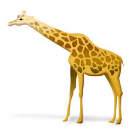
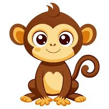
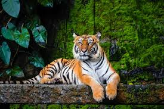
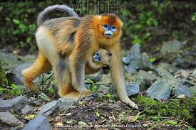

01
Model
- Defined an Animal class with name, description, and two image ids.
- Loaded five animals in MainActivity (Elephant through Tiger).
- Paired each animal with thumbnail and large drawable assets.
A native Android app from my mobile programming class at Cal State East Bay — a scrollable animal list, detail screens, and a warning dialog before the scariest exhibit.
Class needed a small but complete Android app: show a set of animals, open a detail screen for each one, pass data between activities, and handle a special case with a confirmation dialog. It also needed an information screen and solid project structure — not a single messy activity.
I built ZooDirectory with a RecyclerView list, a custom adapter, Java model and detail classes, a Kotlin main activity, and separate screens for animal details and zoo info. Tapping the last animal (Tiger) asks for confirmation before opening the detail view.
I implemented the full app: layouts in XML, the Animal model, RecyclerView adapter, list-to-detail navigation, the scary-animal warning dialog, the zoo information screen with a dial intent, and the overflow menu. The project mixes Kotlin for MainActivity and Java for the model, adapter, and secondary activities — matching how many Android apps grow over time.
View code on GitHubMainActivity shows a scrollable RecyclerView of five animals with thumbnails and names.
AnimalDetailActivity reads name, description, and large image id from the Intent and lays them out.
Information opens ZooInfoActivity (“My Awesome Zoo” + call link). Uninstall launches the system delete-package flow.
Each row in the list uses a thumbnail. The detail screen swaps in the larger image for the same animal.

Giraffe Tallest land animal
Monkey Playful primateanimal_item.xml is a horizontal row: 64dp image and 18sp name. The adapter inflates that layout and binds each Animal so the list stays light and easy to scan.
AnimalDetailActivity pulls extras from the Intent, then shows a bold title, a 250dp center-cropped image, and the short description underneath — a clear list-to-detail pattern.
The last item in the list does not open immediately. An AlertDialog asks “This animal is very scary. Proceed?” with Yes / No. Yes continues to the detail screen; No dismisses. That edge case shows event handling beyond a plain click listener.

The Information menu item opens ZooInfoActivity with the title “My Awesome Zoo” and a tappable phone line. Tapping starts ACTION_DIAL with tel:8888888 so the system phone UI can place the call.

A custom adapter keeps row creation efficient and makes it easy to add more animals later without rewriting the layout.
Animal.java holds data. AnimalAdapter binds UI. Main, Detail, and Zoo Info stay focused — easier to read and grade.
Name, description, and imageId travel with the Intent so the detail screen does not need a shared global object.
Only the last animal triggers a warning. That keeps normal taps fast while proving dialog and callback handling.
Thumbnails keep the list light. Large drawables give the detail screen a clearer hero without stretching a tiny asset.
Information and Uninstall sit in the overflow menu so the main screen stays focused on browsing animals.
MainActivity is Kotlin. Animal, AnimalAdapter, AnimalDetailActivity, and ZooInfoActivity are Java. Layouts and menus live in XML under res/. Package namespace: edu.csueb.android.zoodirectory.
Gradle Android app with minSdk 24 and target/compile SDK 35. Open in Android Studio, sync Gradle, then run on an emulator or device.
Five animals browse and open detail screens with the right name, copy, and image.
Tiger requires an explicit Yes before the detail activity starts.
Zoo info with dial intent, plus uninstall via ACTION_DELETE on the app package.
Proper activities, adapter, resources, and Gradle config under a CSUEB package name.
Mobile UI is mostly about clear navigation and clean data handoffs. RecyclerView plus a custom adapter keeps lists maintainable. Intents keep screens loosely coupled. A single AlertDialog on one row is enough to show that not every tap should behave the same. Mixing Kotlin and Java in one app is normal — what matters is a readable package layout and layouts that match the flow you want users to take.